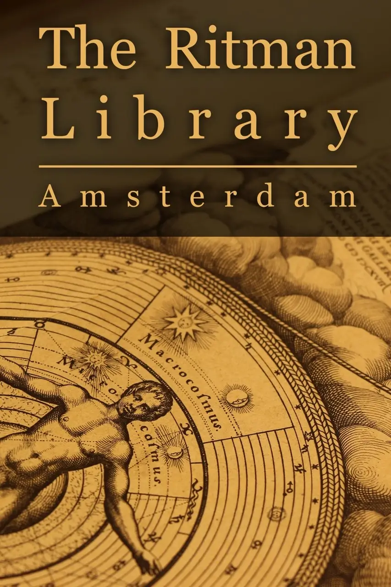

The Ritman Library - Amsterdam
Documentary Film
Runtime: 90 min
Filmmakers: Sara Ferro & Chris Weil
Featuring: Joost Ritman, Esther Ritman, Cis van Heertum, José Bouman, Marco Pasi
Watch legendary first editions, rare books, manuscripts and learn more about the hidden stories and secret symbols of Esotericism. Discover a library with over 23.000 books in the fields of Alchemy, Hermetica, Cabala, Magic, Rosicrucianism, and Mystic.
Bibliotheca Philosophica Hermetica: How old rare books about the divine essence of things, the hidden reality behind the curtain of visible life can be the first companions for a soul seeking for an inner path of spirituality and how this path can be as well of cosmological nature, bringing to the comprehension of the intimate relationship between Microcosmos and Macrocosmos.
How the rediscovery in older printings of betrayed knowledge and concealed truths can ignite a transcendent spark, help to pass a sort of mystical gate and find access to a circle of initiates. In a symbolical alchemical transmutation of the own reality.
How some ancient metaphysical Traditions can incorporate the Inviolable, Absolute and Permanent. How a certain particular world of bibliophiles and bibliomaniacs ticks, what motivate them and how to become comfortable with auction while you build up your library – and above all why to build up a library. Understanding books as an engine of cultural revolutions and as a heritage of hard-fought theories and vexed authors, whom we can now enjoy freely.
The founder of the BPH Joost Ritman, the director of the library Esther Ritman, the bibliographical team with Cis van Heertum and José Bouman tell us about all this, while Dr. Marco Pasi from the University of Amsterdam narrates the wonderful and captivating history of Western Esotericism.
Watch legendary first editions, rare books and manuscripts like the famous Fama Fraternitatis, Corpus Hermeticum, Tabula Smaragdina, Atalanta Fugiens, Spaccio della bestia trionfante, Plontin Polyglot Bible and discover incredible works of authors like Basilius Valentinus, Marsilio Ficino, Johannes Reuchlin, Heinrich Cornelius Agrippa von Nettesheim, Paracelsus, Giordano Bruno, Heinrich Khunrath, Michael Maier, Jacob Böhme, Lambspring, Robert Fludd, Daniel Mögling, Baruch Spinoza, Matthäus Merian and Stephan Michelspacher.
-
 Special Screening
Special Screening
Star Cinema
DECENTRALAND
Metaverse
USA 2022 -
Nominee
Best Film
AIFF 2018 -
Nominee
Best Story
AIFF 2018 -
Nominee
Best Director
of a Feature
Documentary
AIFF 2018 -
Nominee
Scientific
Educational
Award
AIFF 2018 -
Official Selection
Amsterdam
International
Filmmaker
Festival
AIFF 2018 -
Special Screening
Oerol
Terschelling 2017 -
Official Selection
DOCfeed
Documentary
Festival
Eindhoven 2017 -
Official Selection
Miami
Independent
Film Festival
2017 -
Official Selection
ARFF Berlin
International
Awards
2017 -
Winner
Best Project
MedFF
Siracusa 2016 -
Official Selection
International
Monthly
Film Festival
Copenhagen 2016


{kind=link}
{kind=link}